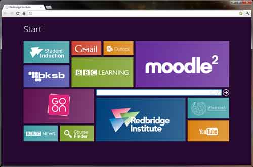

Watching the Udacity video learning resource was great. It enabled us to access many different learning methods and the step by step nature of the delivery made the content easy to understand and review.
What is grid based design?
Grid based design is a concept where a page is split into a number of sections on which the content is then laid out. The result of this is a number of separate design elements positioned in a logical sequence.
From an aesthetic perspective, there should be a consistency in the content in terms of how it is aligned and the amount of space each design element occupies.
A typical webpage is split into 12 columns of which we can further separate them by creating rows. By using row and column classes, we can apply our CSS rules to similar elements rather than having to style each one separately.
Whats all the hype about responsive webpages?
No longer is our on-line browsing confined to a desktop or laptop. We now have other devices such as mobile phones and tablets to consider when designing our webpage.
A responsive webpage automatically changes its layout depending on the size of the window or device it is being viewed from. This makes the whole user experience more pleasant and enjoyable.
What is semantic structure?
Semantic structure is about using our html code to reinforce the meaning of the content within our tags.
It is important because, although we can use CSS to give our page meaning based on how it is styled, search engines and screen readers will not be able to pick up on these visual cues.
Fortunately we have a number of different tags at our disposal. We can identify headings (h1 through to h6) with h1 being the most important. A reminder however that you should choose the heading tag on the basis of importance, not on how it may look on the page.
Other examples of tags are sections, articles, block-quotes, lists. The are some in-line styling tags too which convey meaning such as using <em > to emphasise something, not for italicizing.
Any other points you found interesting and want to reflect on?
CSS has proved to be very challenging for me as I get frustrated not being able to position and style the elements on my page as easily as I thought I could.
I find the whole responsive side of the site daunting albeit fascinating.